| Lubomír Soukup | |
| Department of Image Processing | |
| Institute of Information Theory and Automation | |
| Academy of Sciences of the Czech Republic | |
| Pod vodárenskou vezí 4, 182 08 Praha 8 | |
| Czech Republic | |
| phone: | + 42 2 6605 2551 |
| fax: | + 42 2 688 4903 |
| e-mail: | soukup@utia.cas.cz |
In Bayesian statistics it is to evaluate Bayes formula to obtain probability
distribution of estimated parameters. Bayes formula for independent
observations is as follows.
| x | ... | vector of estimated parameters,
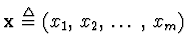 ,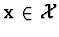 , |
||
|
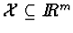 ,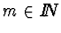 , |
||||
|
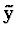 |
... | vector of measured values (observations),
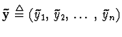 , |
||
| aj | ... | functions that are measured for certain fixed argument , | ||
|
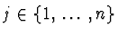 ,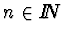 , |
||||
|
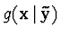 |
... | a posterior density function, | ||
|
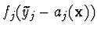 |
... | probability density
function of the error of measurement
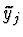 , |
||
| p(x) | ... | a prior density function. |
The problem is how to evaluate the integral in the denominator in
( ). In the general case when the functions aj are nonlinear and
density functions fj are not normal, the integral have to be evaluated
approximately. Unfortunately, no universal eficient method of integration
in Bayes formula exist. The most general approach uses simulations based on
Monte-Carlo method (see e.g. [#!j:MfAIiSwSEoBIP!#]), but it is too much time
consuming for large m. Standard techniques of numerical integration
(e.g. Simpson's method and its modifications) are
also too slow even for the common number of estimated parameters (m >
4). The most efficient approach utilize symbolic integration, but the
applicability of this approach depends on the analytical form of functions
aj, fj, p.
). In the general case when the functions aj are nonlinear and
density functions fj are not normal, the integral have to be evaluated
approximately. Unfortunately, no universal eficient method of integration
in Bayes formula exist. The most general approach uses simulations based on
Monte-Carlo method (see e.g. [#!j:MfAIiSwSEoBIP!#]), but it is too much time
consuming for large m. Standard techniques of numerical integration
(e.g. Simpson's method and its modifications) are
also too slow even for the common number of estimated parameters (m >
4). The most efficient approach utilize symbolic integration, but the
applicability of this approach depends on the analytical form of functions
aj, fj, p.
When the functions aj are only slightly nonlinear and probability distributions fj, p are close to normal, assumptions of linearity and normality are adopted to evaluate the integral symbolically. It actually represents approximation of the posterior distribution by normal distribution and the estimation problem can be solved by linear least-squares method. In such an approach the computation is very fast but it is hard to estimate the influence of the simplifications to the outcoming posterior probability density function.
The assumptions of linearity and normality can be justified with the aid of
modification of density functions fj (see [#!c:PDfENE!#]). This
modification corrects the nonlinearity while the mean values and standard
deviations of the original distributions remain unchanged. To meet these
requests another approximate integration have to be performed, that is easier
then integration in ( ) and can be done symbolically. This
integration appears in equations of the form
) and can be done symbolically. This
integration appears in equations of the form
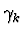
,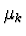
,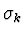
are unknown.
System of equations ( ) can be solved by means of infinite series.
In fact, only few terms of the resulting series have to be
evaluated. Nevertheless, the symbolic treatment with series is very tedious
work and some computer algebra system has to be used. System of equations
(
) can be solved by means of infinite series.
In fact, only few terms of the resulting series have to be
evaluated. Nevertheless, the symbolic treatment with series is very tedious
work and some computer algebra system has to be used. System of equations
( ) was solved with the aid of Mathematica software by Wolfram
Research. The crucial operations that has been frequently used were
differentiation (D), series inversion (SeriesInversion), and composition of
series (ComposeSeries).
) was solved with the aid of Mathematica software by Wolfram
Research. The crucial operations that has been frequently used were
differentiation (D), series inversion (SeriesInversion), and composition of
series (ComposeSeries).
The designed method can be applied to such scientific and technical branches where slightly nonlinear models are usually used. This case is typical for geosciences such as geodesy, cartography, remote sensing, geology etc.